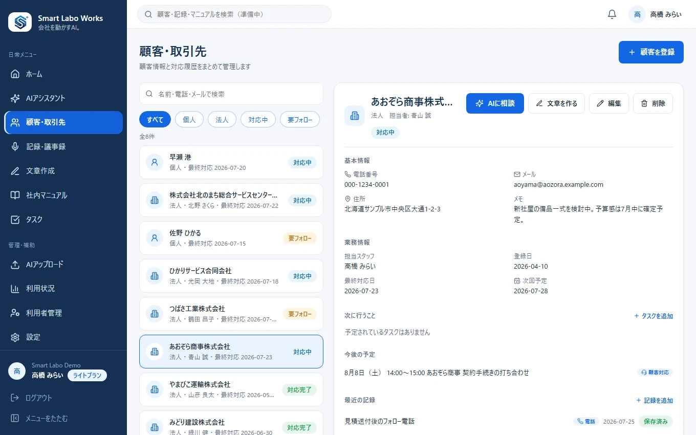
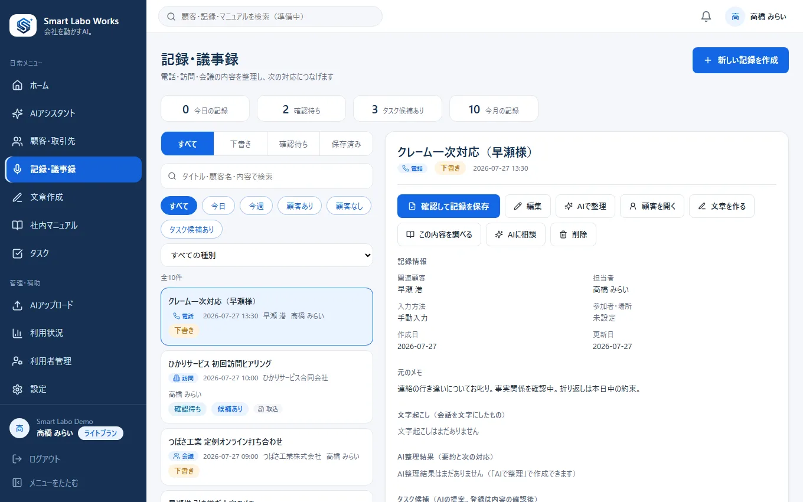
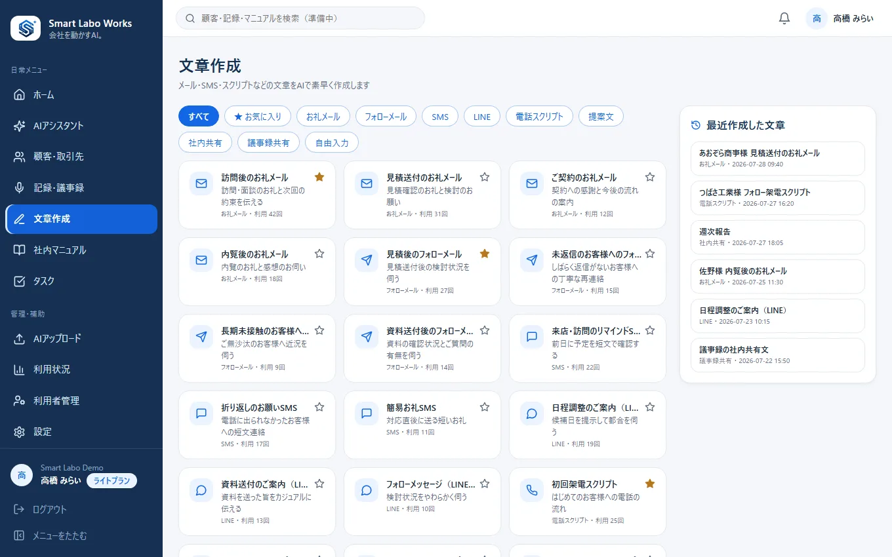
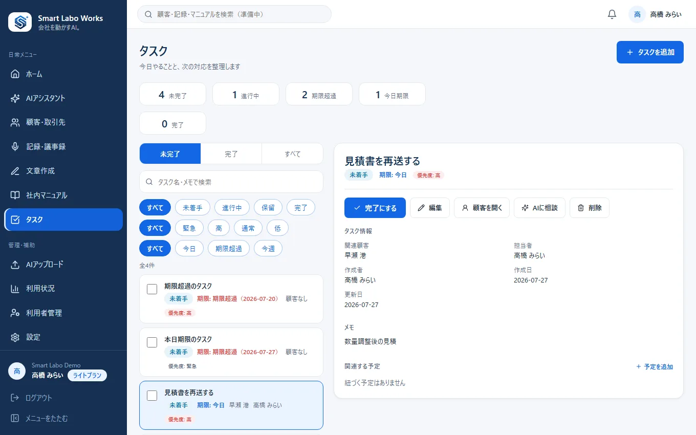

日報とExcelに同じ内容を入力しています。
SMART LABO WORKS｜会社を動かすAI。
AIと働く、新しい職場へ。
会議も、日報も、情報共有も。
AIが仕事の流れに入り、会社を前へ動かす。
Smart Labo Worksは、AI会議を中心に、社内情報と日々の業務をひとつにつなぐ次世代の業務システムです。誰もが自然にAIを使える働き方を、御社の業務に合わせて整えます。
- AI会議
- 業務AIエージェント
- 社内業務基盤
オンライン30分・売り込みはしません
AI会議意見受付中
営業の残業時間を減らすには？
目的：毎週の事務作業を見直し、営業が顧客対応に集中できる方法を決める
AIここまでの整理
- 共通課題
- 重複入力と資料作成
- 少数意見
- 会議回数の見直し
- 改善候補
- 日報から会議資料を自動作成
MAIN FEATURE｜AI MEETING
AIと働く会社は、
会議から変わる。
集まらない。資料を作らない。AIが意見を整理し、人が決める。AI会議から、時間や場所に縛られない新しい働き方を始められます。
時間に縛られない
全員の日程を合わせず、招待された社員が回答期限までの好きな時間に参加できます。
AIが意見を整理
必要な時にAIを呼び、論点、懸念点、少数意見を整理して話し合いを前へ進めます。
判断が前に進む
AIが深掘り質問や決定案の作成を支援し、決定者が判断しやすい材料をそろえます。
実行までつながる
人が決定事項、担当者、期限を確定し、会議の結論を次の行動へつなげます。
| 会議 | 従来の会議 | Smart Labo WorksのAI会議 |
|---|---|---|
| 参加 | 全員の日程を合わせて集合 | 好きな時間に意見を投稿 |
| 準備 | 資料や議題を事前に作成 | 会議名と目的から始められる |
| 発言 | 一部の人に偏りやすい | 立場に左右されず意見を残せる |
| 整理 | 議事録と論点を人が整理 | AIが整理・質問・決定案を支援 |
| 決定 | 担当や期限が曖昧になりやすい | 人が決定し、担当者と期限を確定 |
AIは意見を整理して決定案を作りますが、会社の決定を自動で確定することはありません。
1会議を作る
目的・参加者・決定者を設定
2意見を投稿
招待された社員が好きな時間に参加
3AIが支援
整理・深掘り・決定案を作成
4人が決める
決定事項・担当者・期限を確定
FROM IDEA TO ACTION
会議で見つけた課題を、
「業務AIエージェント」に。
話し合って終わらない。改善を実行へ。
AI会議で整理された課題をもとに、まず運用変更やWorksの既存機能で解決できるかを確認。必要な場合は、会社ごとの業務手順に合わせた専用AIを開発します。
01
問い合わせ対応をつなぐ
問い合わせ内容の整理から顧客登録、返信文の下書きまでを一連の流れにします。
02
日報から報告書をつくる
毎日の日報を集約し、週報・月報に必要な内容をまとめて下書きします。
03
Excel作業を仕組みに変える
転記・集計・書類作成など、繰り返し発生する作業をボタン操作や自動処理へ変えます。
BUSINESS PLATFORM
決めて終わらない。
毎日の仕事まで、ひとつに。
AI会議、顧客、予定、報告、社内情報を同じ業務基盤にまとめ、話し合いから日々の実行までをつなげます。

01
顧客・予定管理
顧客情報、対応履歴、次の予定をまとめて確認。担当者が変わっても状況を追えます。

02
日報・報告書
日々の記録を残し、報告に必要な内容を整理。過去の対応履歴も確認できます。

03
AI検索・文章作成
登録した記録や社内資料を探しやすくし、メールや報告文の作成にもAIを活用できます。

04
タスク・社内情報
タスク、社内ルール、マニュアルなどをまとめ、社員が同じ入口から確認できる環境をつくります。
※掲載画面はデモ用の架空データです。利用できる機能は、ご契約内容と会社ごとの設定によって異なります。
DEVELOPMENT FLOW
業務を伺い、必要なAIと仕組みをつくります。
- 01
無料業務診断
時間がかかっている作業と、現在の仕事の流れを伺います。
- 02
自動化の設計
AIに任せる部分と、人が確認する工程を整理します。
- 03
開発・初期設定
業務システムを設定し、必要なAIエージェントを開発します。
- 04
利用開始・調整
実際の業務で使いながら、運用に合わせて調整します。
PRICE
料金の目安
AI会議を含む共通の業務基盤を活用し、次世代の働き方を導入しやすい価格からご提供します。
AI会議・基本機能 月額20,000円〜
初期設定費用30,000円〜
業務AIエージェント開発30,000円〜1業務の自動化から
表示価格は税別です。
業務AIエージェントの運用に伴う月額料金は、処理内容・利用量・外部サービスとの連携方法に応じて個別にお見積りします。
FAQ
よくあるご質問
AI会議とは何ですか？
社員が同じ時間に集まらず、好きな時間に意見を投稿できる会議機能です。必要な時にAIを呼び、論点整理、深掘り質問、決定案の作成を支援します。
AIが会社の決定をするのですか？
いいえ。AIは意見や論点を整理して決定案を作りますが、正式な決定は必ず指定された決定者が行います。
全員が同じ時間に参加する必要がありますか？
必要ありません。招待された社員が回答期限までの好きな時間に投稿できるため、日程調整や会議のための集合時間を減らせます。
従業員が少ない会社でも使えますか？
はい。少人数の会社でも、日々の記録や情報共有をまとめたい場合にご利用いただけます。必要な人数と機能を伺ってご提案します。
ITが苦手でも使えますか？
できるだけ迷わず操作できる画面と、会社の運用に合わせた初期設定を重視しています。導入時に基本操作もご案内します。
今使っているExcelのデータは移せますか？
データの形式と内容を確認したうえで、移行できる範囲と方法をご案内します。まずは現在のファイルを拝見して判断します。
契約期間の縛りはありますか？
利用する機能や個別開発の内容によって条件が異なるため、お見積り時に利用期間を含む契約条件をご案内します。
仕様が決まっていなくても相談できますか？
はい。現在の作業を伺い、どこから仕組み化するのがよいかを一緒に整理します。相談時点で仕様書は必要ありません。
業務AIエージェントでは、どんな作業を自動化できますか？
情報検索、文章の下書き、日報の集約、Excelの転記・集計などが候補になります。実現できる範囲は、現在の業務手順、利用中のシステム、人による確認が必要な工程を伺って判断します。